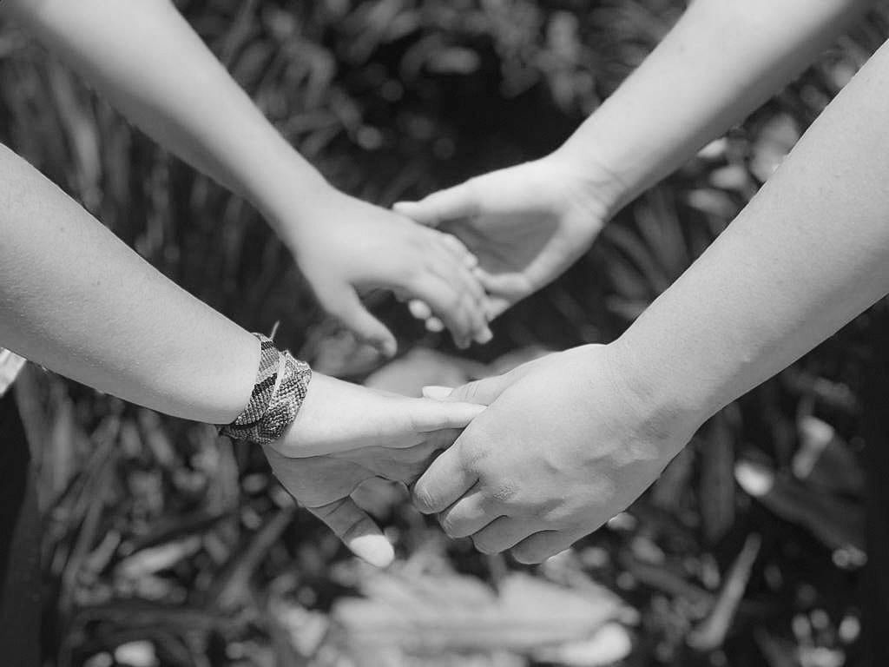
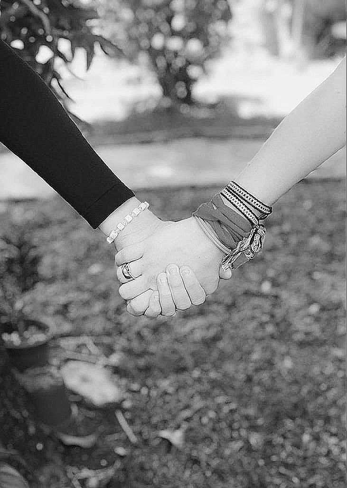
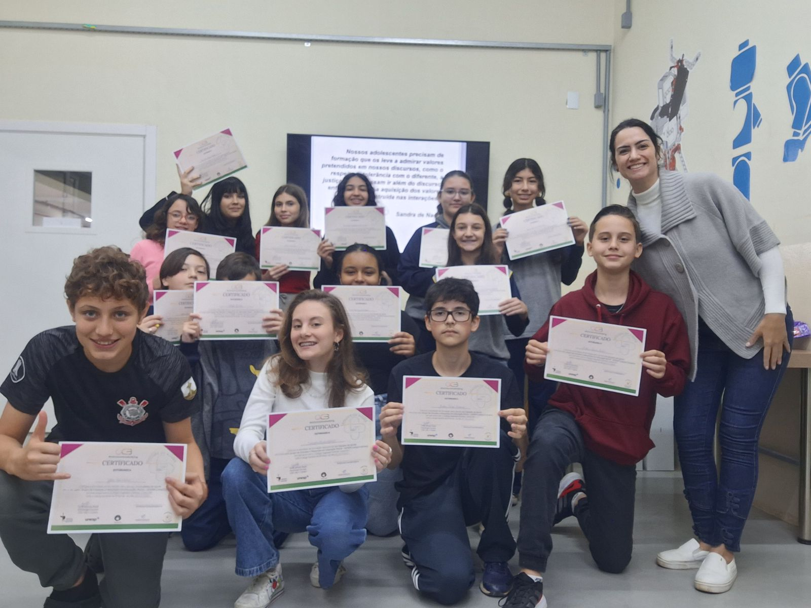
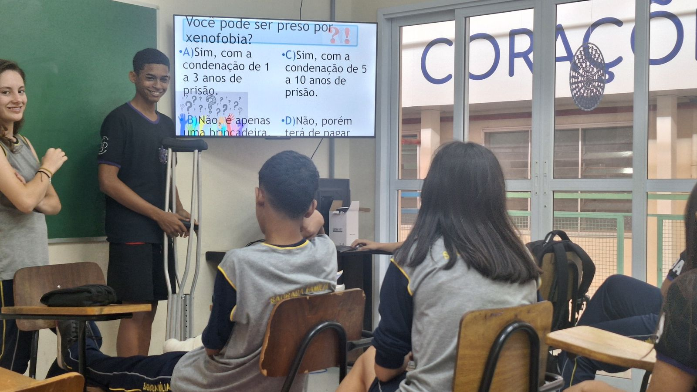
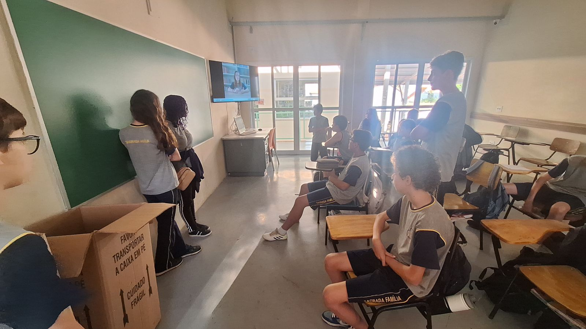
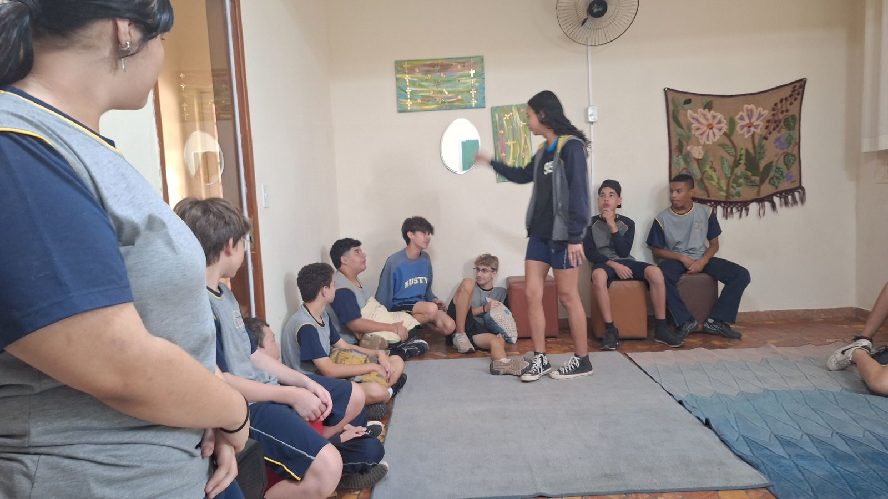
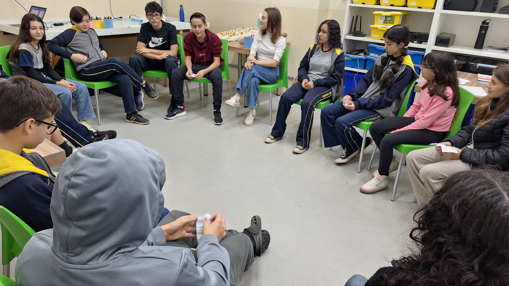
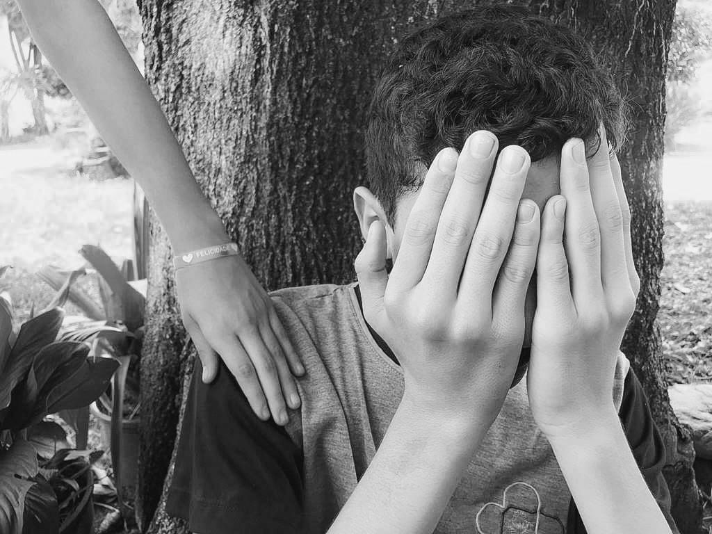

Projeto Comunidade Cuidado e Apoio
"É um sentimento que os membros têm de pertencer, de que são importantes uns para os outros e para o grupo, e uma fé compartilhada de que as suas necessidades serão atendidas por meio de seu compromisso de estarem juntos". (McMillan e Chavis, 1986)
O Colégio Sagrada Família é a única escola de Leme/SP a integrar a Rede de Comunidades de Cuidado e Apoio do Brasil. Vem saber mais sobre este projeto!
A escola é um espaço que concentra grande parte dos desafios e as diversidades da sociedade, que se somam ao propósito de educar. É na escola que as pessoas passam grande parte do início de suas vidas, assim, é nela que aprendem a socializar, desenvolvendo e exercendo os valores morais e convivendo com as diferenças. Neste cenário, tendem a aparecer divergências comuns e esperadas nas relações interpessoais, entendidas como conflitos naturais da convivência, assim, lidar com estes conflitos de forma construtiva e saudável é um desafio que deve ser enfrentado por toda a comunidade escolar.
Neste intento, faz-se extremamente necessário que as instituições de ensino adotem para si a responsabilidade pela boa convivência, traçando estratégias de prevenção de violências e de restauração, no caso de violências que já ocorreram. Neste intento, as Comunidades de Cuidado e Apoio (CCA) entre estudantes são uma forma de Protagonismo Juvenil e podem ser descritas como um tipo de Sistema de Apoio entre Iguais (SAI).
Este projeto é parte da implementação de um programa de convivência na escola e seu objetivo principal é o de melhorar a qualidade da convivência na escola a partir do protagonismo dos alunos, conectando uns aos outros entre pares, desenvolvendo valores morais e prevenindo violências. Esta proposta foi desenvolvida a partir dos estudos do GEPEM (Grupo de Estudos e Pesquisas em Educação Moral) da UNESP/UNICAMP e apresenta evidências científicas de resultados a partir de diversas universidades. Os alunos passam por formação sobre a convivência ética durante as aulas de Socioemocional e Convivência, depois, são escolhidos pelos pares os alunos a serem convidados a participar da CCA, que, posteriormente, passam por uma formação com nossa tutora responsável, a psicóloga Yeda, e são por ela acompanhados e orientados ao longo do ano.
Algumas pesquisas têm mostrado resultados positivos a partir do trabalho junto às CCAs, como: redução da incidência de bullying nas escolas com um SAI; diferença significativa do ponto de vista das intimidações nas escolas, ou seja, acontecem mais intimidações nas escolas que não têm este projeto (LAPA, 2019); alunos participantes têm maior adesão a valores morais que aqueles que não participam e demais alunos de escolas com este projeto têm maior adesão a valores morais do que escolas sem (BONFIM, 2019) por exemplo.
Ademais, vale destacar que pesquisas também apontaram que os alunos pertencentes à CCA têm maior adesão a valores morais mesmo que percebam a disciplina parental menos assertiva, o que indicava que os valores morais tinham a ver com a escola (DE NADAI, 2019). Deste modo, também os alunos participantes demonstraram que suas crenças de autoeficácia para ajudar são mais altas em comparação aos alunos que não participam (SOUZA, 2019).
Por conseguinte, faz-se importante enaltecer que, Naylor e Cowie (1999) verificaram que propostas de SAI são positivas e benéficas para o ambiente escolar, considerando que o bullying pode ser detectado mais rapidamente pelos colegas, já que a confiança depositada em alguém do mesmo nível hierárquico é maior que àquela a uma autoridade. Com tais atuações, os alvos têm a quem pedir ajuda, beneficiando quem precisa e, também, quem ajuda, pois as alunas e os alunos que se envolvem nesse tipo de protagonismo melhoram suas habilidades sociais e de autoconfiança.
Assim, nesta perspectiva a escola é percebida como uma comunidade que se importa com as relações entre os alunos, considerando que o propósito deste projeto se desdobra na formação de alunos que defendam a convivência como um valor, desejando e escolhendo o bem, com atitudes respeitosas, generosas e humanas.
A atuação de nossos alunos já resultou em muitas ações positivas, como em uma produção fotográfica que integrou o livro: “Estrangeiros na própria terra: convivência escolar e bullying na perspectiva da Psicologia Moral”, de Luciene R. Paulino Tognetta. Algumas destas fotos foram transformadas na exposição “Mãos, pés e olhos de gente que cuida de gente”, exposta na Unicamp no VI Encontro Nacional das Equipes de Ajuda do Brasil, em Setembro de 2024.
Para conhecer mais sobre esta proposta e as pesquisas citadas, acesse: www.somoscontraobullying.com.br
Algumas imagens ajudam a demonstrar o papel de nossos alunos, desde a inserção do projeto nas aulas, passando pelo Dia da Formação, as participações dos alunos nos Encontros Nacionais, as intervenções na escola e a produção fotográfica de nossos alunos.
Referências Bibliográficas:
BOMFIM, S. A. B. Respeito, justiça e solidariedade no coração de quem ajuda: valores morais e protagonismo entre alunos para combater o bullying. Dissertação de mestrado. Unesp, 2019. Disponível em: Acesse aqui.
DE NADAI, S. T. Disciplina de educação parental e participação em processo de vitimização entre pares. Dissertação de mestrado. Unesp, 2019. Disponível em: Acesse aqui
LAPA, L. Z. Valentes contra obullying: a implantação das Equipes de Ajuda, uma experiência brasileira. Dissertação de mestrado. Unesp, 2019. Disponível em: Acesse aqui
NAYLOR, P.; Cowie, H. The effectiveness of peer support systems in challenging school bullying: the perspectives and experiences of teachers and pupils. Journal of adolescence, v. 22, n. 4, 1999, p. 467– 479. Acesse aqui
SOUZA, R. A. Quando a mão que acolhe é igual a minha: a ajuda em situações de (cyber)bullying entre adolescentes. Dissertação de mestrado. Unesp, 2019. Disponível em: Acesse aqui